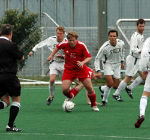
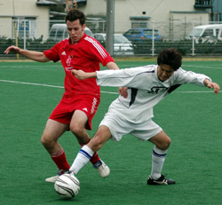

|
Hachioji Park, Saturday 31st March, In a remarkable turnaround to a season that looked completely lost, the Swiss have managed to put together 2 wins in a row, and are looking a little more solid as many of the team’s more consistent performers return from extended trips or injuries. It was a solid effort from the boys with hard work in midfield making it tough for the Chiba beer boys to connect much and the defensive unit looked unsettled only once or twice with Shigeru’s overlapping runs. The lack of Guido in the first half and Andreas’ recent departure made things a little bit easier, more time on the ball and good runs out of midfield. The first goal came after 15 minutes mainly due to poor defending by Sala. The ball was knocked into the box 3 or 4 times and never was cleared. Karl eventually got a shot off which Sid did well to block but it rebounded straight to Kai for him to smack into the upper left corner. Kirk had a chance to double the lead about 5 minutes later only to see his volley from 25 yards out fly over Sid and bounce off the bar. Another 5 minutes on, he didn’t miss with his head after a perfect corner by Aoki, getting away from Paul Clarke to head it straight into the left hand corner.
The first half ended with Sala pushing hard but never really creating clear chances. Many of the balls to the corner were picked up but crosses were poor and there weren’t enough attackers in the box to create problems for Raffa and Peter. Suzuki was working extremely hard on the left hand side and was up and down the field. The first half ended 2-0. One bad ending to the first half was the loss of our center back, Chris, due to a muscle pull but he was to be more than adequately replaced by Phillip.
The second half began similarly, the Swiss were doing a little better holding onto the ball but didn’t create much up front. Sala got more balls into the attacking 3rd but really didn’t pressure Peter until a few of the high balls got into to the 6 yard box. Guido made his presence felt and it did firm up the back line but the attackers weren’t getting the ball in good positions to get good shots off. The Swiss would eventually get a 3rd goal with JP floating a free kick into Kirk at the top of the box, he held off Guido and dropped it to Kohama who got away from his defender and ‘passed’ it by Sid into the lower left hand corner. It was a nice play worked together by 3 players who have been kicking it around for 10 years. The game would end 3-0 with few clear chances either way. For the Swiss, it is a nice way to head towards the end of the season with the BFC looking well clear at the top but there remains a battle for that last automatic Champions League qualifying spot – all to play for….
Report by Capn Kirk
|